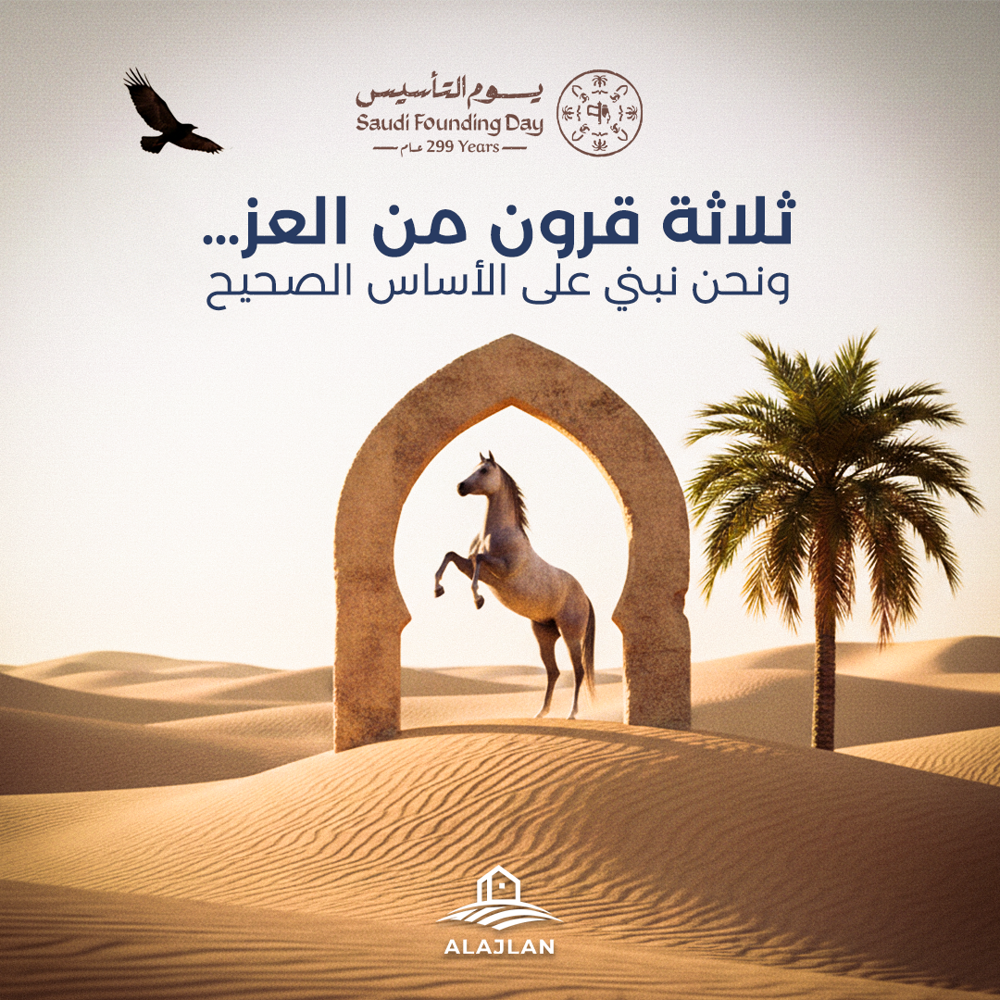
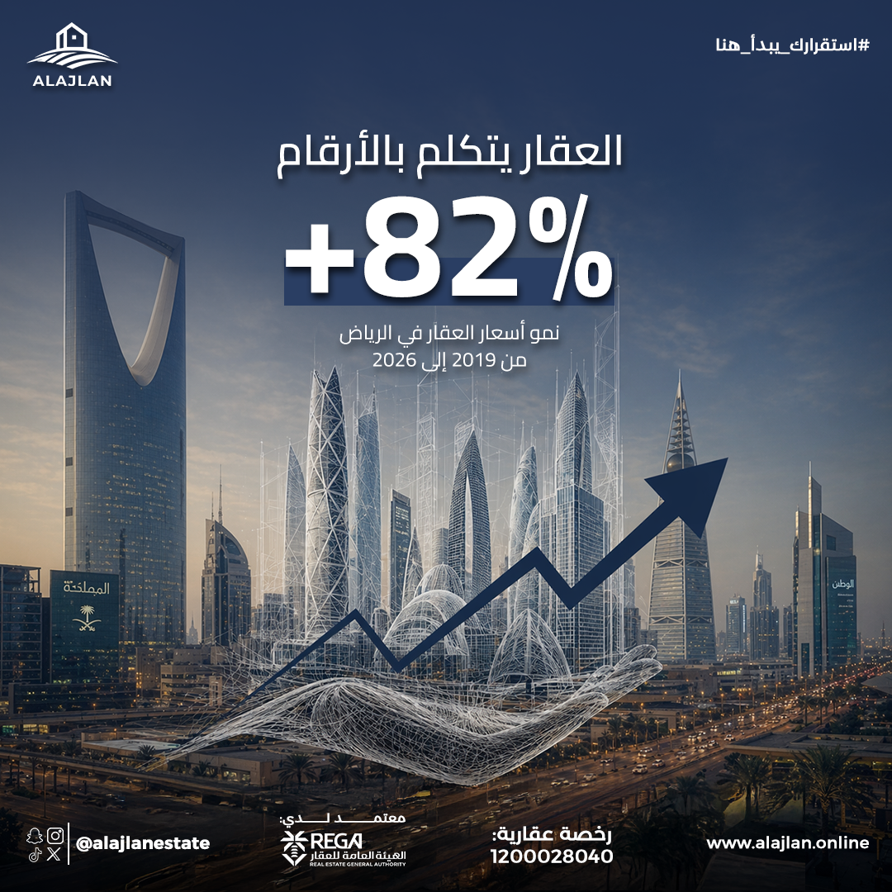
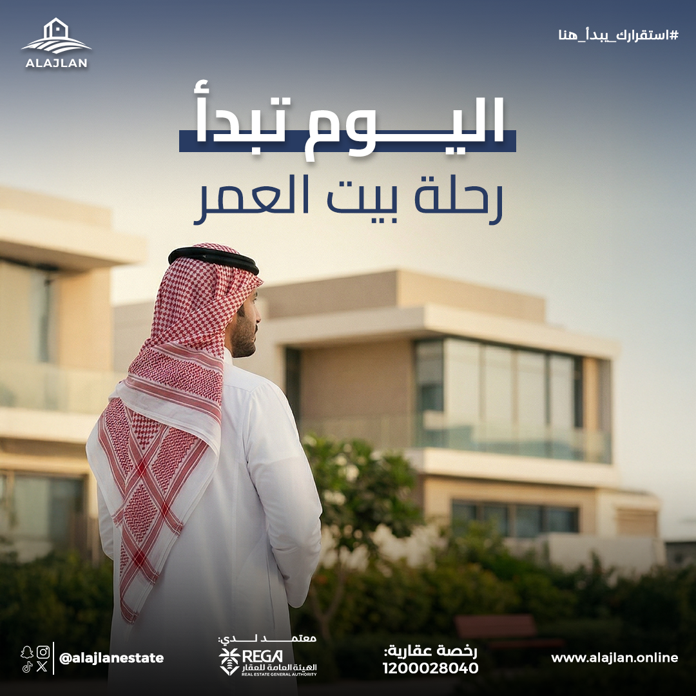
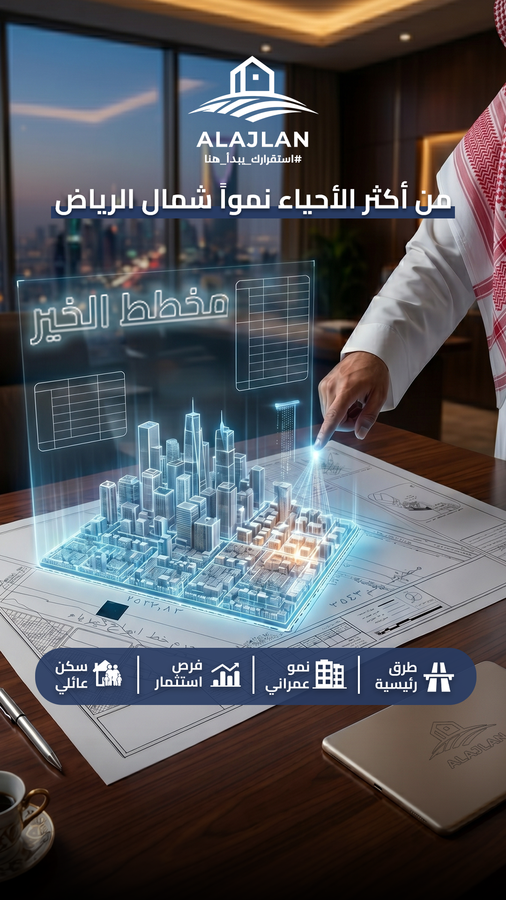

استراتيجية انتشار شاملة وإدارة حملات إعلانية وبناء الهوية البصرية وتطوير استراتيجية الانتشار الرقمي.
بناء استراتيجية الأداء الرقمي وإدارة المحتوى الإبداعي للفيديوهات لزيادة الطلب على خدمات الإنتاج الإعلامي.